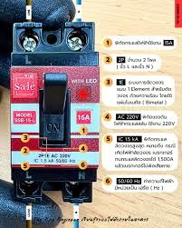

เบรกเกอร์รุ่น SBF-16L พร้อมระบบตรวจจับไฟรั่วและตัดไฟอัตโนมัติ เหมาะสำหรับระบบไฟฟ้าในบ้านและอาคาร
ข้อมูลจำเพาะของเบรกเกอร์ SBF-16L
1. ความสามารถในการตัดกระแส
- ตัดกระแสไฟฟ้าได้สูงสุด: 15A
- แรงดันไฟฟ้า: AC 220V
- ความถี่: 50/60 Hz
- จำนวนโพล: 2P (ตัดทั้งสาย L และ N)
2. ระบบป้องกันไฟรั่ว
- วงจรตรวจจับไฟรั่ว: แบบอิเล็กทรอนิกส์
- ความไวในการตัดไฟรั่ว: 15mA
- เหมาะสำหรับ: ป้องกันอันตรายจากไฟรั่วในบ้านและอาคาร
3. ฟังก์ชันและคุณสมบัติเพิ่มเติม
- รุ่น: SBF-16L
- สวิตช์เปิด/ปิด: มีปุ่ม ON พร้อมแสดงค่ากระแส (15A)
- WISH LED: มีไฟแสดงสถานะการทำงาน
- การติดตั้ง: ใช้กับระบบไฟฟ้าในบ้านทั่วไป
การเลือกใช้ขนาดกระแสไฟฟ้า (Ampere)
การเลือกขนาดเบรกเกอร์ต้องสัมพันธ์กับโหลดไฟฟ้าที่ใช้งาน เพื่อความปลอดภัยและป้องกันการตัดไฟเกินจำเป็น:
- 6A – 10A: เหมาะสำหรับวงจรหลอดไฟ หรือปลั๊กเบา
- 16A: ใช้กับปลั๊กทั่วไป หรือเครื่องใช้ไฟฟ้าขนาดกลาง เช่น พัดลม, หม้อหุงข้าว
- 20A – 25A: สำหรับเครื่องใช้ไฟฟ้ากำลังสูง เช่น เครื่องซักผ้า, เตาอบ
- 32A – 40A: เหมาะกับแอร์, ปั๊มน้ำ, เครื่องทำน้ำอุ่น
- 50A ขึ้นไป: ใช้กับเมนหลักของบ้าน หรือระบบไฟฟ้าอุตสาหกรรม
คำแนะนำ: ควรเลือกเบรกเกอร์ที่มีค่ากระแสสูงกว่าการใช้งานจริงประมาณ 20-25% และควรมีระบบป้องกันไฟรั่วเพื่อความปลอดภัยสูงสุด